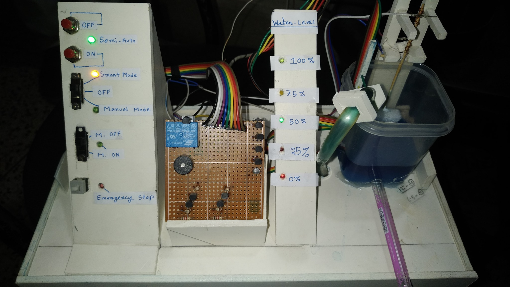

Automatic Smart Water Pump Controller
The Goal of this project was to control the water pump we use in houses and factories to fill the water tanks. On 2019, I went to my village house where my mother lives. I have seen her sitting in front of the water pump switch to turn off it when the tank gets filled, so that the water is not wasted. From that scene I have got the idea of making such a project.
Horror Cave Adventure

This was for one of my University Courses. This game is totally RAW Coded in Java Language. It's Currently Under Development.
Advanced Line Follower Robot with AI

This is the successor of my previous Line Follower Robot I made for ICT Fest 2019. But now this one is very advanced and has a little bit AI, so that Whenever it losts the track, it assumes where the track is and returns to the track. This track finding algorithm works 99.9% of the time and returns the LFR to right track.